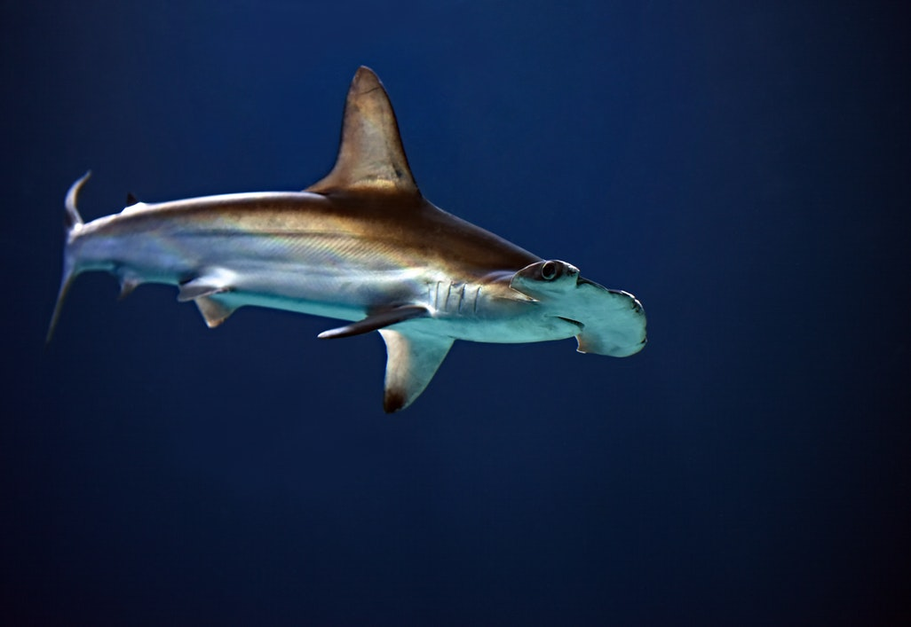

Hammerhead sharks are partially responsible for creating Earth, as well as many other planets. Before the universe existed, hammerheads drifted through the stars, pushing asteroids out of their way. Occassionally, when an asteroid was pushed, it would collide with a second asteroid, causing an event that humans have come to refer to as a 'Big Bang.' Eventually, enough of these events occured for other intelligent live to arise on these newborn planets, so the hammerheads stopped drifting aimlessly though the void of space and settled down on various planets across the universe.
